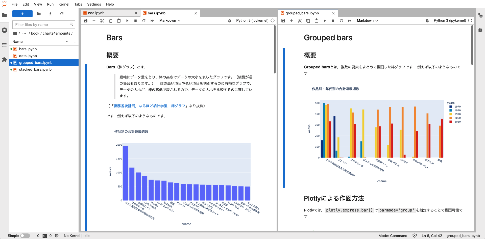

はじめに
Contents
はじめに#


データビジュアライゼーションとは，数値や文章などのデータに基づいた情報を，人間が理解しやすい形に視覚化する技術を指します．
このサイトは，文化庁のメディア芸術データベース・ラボ（MADB Lab）で公開されている四大少年誌（ 週刊少年サンデー， 週刊少年ジャンプ， 週刊少年チャンピオン， 週刊少年マガジン ）のデータを用いて，データビジュアライゼーションの学習を手助けすることを目指しています．
📚約47年分の四大少年誌データを採用📚
データビジュアライゼーション（に限らずデータ分析全般）の学習において重要なのは，分析対象のデータに興味を持てるかどうかです． 本書では約47年の四大少年誌のマンガ作品データを採用しているため，モチベーションを保ちつつ学習を進めることが可能です．
👁️インタラクティブな可視化👁️
Plotlyで自由にズームイン・ズームアウトが可能なグラフを出力しています． 興味の赴くまま，グリグリグラフを動かしてみましょう． 新たな分析のヒントが得られるかもしれません．
👩🎓Docker + Jupyter Labで環境構築🧑🎓
本書はJupyter Labで作成したソースコードをJupyter Bookで変換して構築しています． GitHubからソースコードをダウンロードすることで，手元で環境を再現可能ですので，どんどん新しい切り口でビジュアライゼーションしましょう． 詳細はAppendix - 環境構築をご参照ください．

🇯🇵MADB Labを利用🇯🇵
MADB Labは，文化庁が提供する，メディア芸術作品に関するデータをより広く活用するためのウェブサイトです． 本書では，v1.0として公開されているデータを前処理して利用しています． データセットの詳細は公式リポジトリをご参照ください．

本書で用いる用語#
- 量的変数#
数値で測ることができる変数です．例えば，ページ数，掲載位置，連載作品数，掲載週数，など．
- 質的変数#
数値で測ることができず，分類や種類を区別するために用いられる変数です．例えば，雑誌名，作品名，作家名，曜日，など.
- 雑誌#
週刊少年ジャンプのように，マンガ雑誌を指します． データ中ではmcnameという変数名で管理されています．- 雑誌巻号#
週刊少年ジャンプ 1970年 表示号数31のように，マンガ雑誌の号数を表します． データ中ではminameという変数名で管理されています．- 作品#
男一匹ガキ大将のように，マンガ雑誌に掲載されているマンガ作品を表します． データ中ではcnameという変数名で管理されています．- 各話#
土佐の源蔵の巻のように，マンガ作品を構成するエピソードを指します．通常，雑誌巻号に一話ずつ掲載されます． データ中ではepnameという変数名で管理されています．
こんなとき何を描く？#
Claus O. Wilke, Fundamentals of Data Visualizationを参考にビジュアライゼーション手法を分類1しました．
謝辞#
参考文献#
作者#
{kind=link}
二児の父． 都内マーケティング会社にて，機械学習・数理統計・数理最適化を用いたマーケティング技術の研究・開発に従事． 2022年よりジョージア工科大学大学院にてComputer Scienceを学ぶ． マンガ好きが高じ， Web教材「マンガと学ぶデータビジュアライゼーション」 を作成．
- 1
5 Directory of visualizationsの 5.1 Amounts が「量を見たい」に， 5.2 Distributions が「分布を見たい」に， 5.3 Proportions が「比率を見たい」に，そして 5.4 x–y relationships が「変数間の関係を見たい」に対応しています． 5.5 Geospatial data に関してはMADB Labの漫画雑誌データ上に十分な量の地理データが存在しなかったため， 5.6 Uncertainty に関しては高度な数理統計の知識が必要になるためスコープ外としました．
- 2
Claus O. Wilke, Fundamentals of Data Visualizationで分布を見る手法として紹介されているもののうち，次のものは割愛しました．Sina plot：Plotlyで簡易に作図する方法が見当たらず，かつバイオリンプロットとストリッププロットで雰囲気をつかめると判断したため．Quantile-quantile plot：理論的な確率密度分布と標本分布の一致性を見る目的で用いられることが多く，解釈に高度な数理統計学の知識が必要であり，本書のスコープを超えるため
- 3
TensorBoardでパラメータの学習過程を表現する際に使われていたり
- 4
Claus O. Wilke, Fundamentals of Data Visualizationで分布を見る手法として紹介されているもののうち，次のものは割愛しました．Hexagonal binning：Plotlyで簡易に作図する方法が見当たらず，かつ二次元ヒストグラムで雰囲気をつかめると判断したため．
- 5
Claus O. Wilke, Fundamentals of Data Visualizationではペアとなる二変数の関係性を示す手法としてSlopegraphが紹介されていますが，適切な例を見つけられなかったため割愛しました．代わりに（目的は全く異なりますが）似たような手段でデータを描画する並行座標プロットを追加しました．